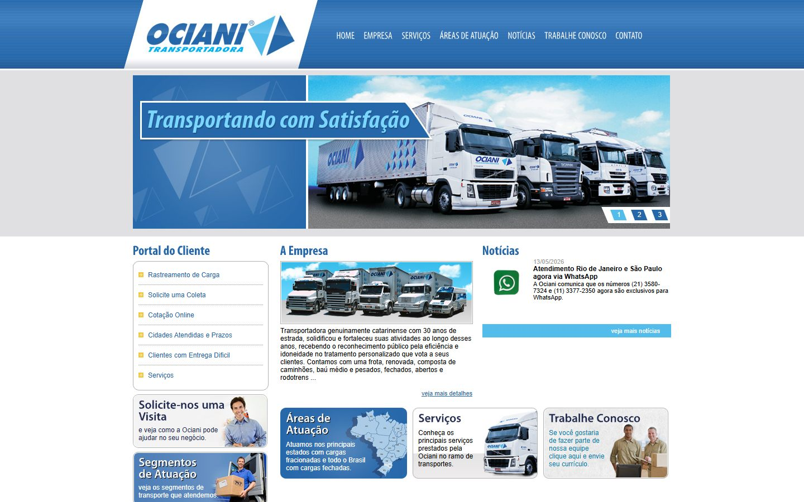

Ciência da Computação · IFC
Instituto Federal Catarinense. Lógica, estruturas de dados e os primeiros passos em Java. Transferência para o IFSC.
Sou graduando em Análise e Desenvolvimento de Sistemas no Instituto Federal de Santa Catarina, e um grande entusiasta da tecnologia, com forte interesse em I.A., desenvolvimento web e back-end. Meu foco técnico principal está no Ecossistema AWS, Java, bancos de dados SQL e Python, criando soluções eficientes e arquiteturas robustas, como APIs e microsserviços.
Aberto a oportunidades de estágio, colaborações e aprendizado contínuo na área de tecnologia, incluindo atuação remota para empresas internacionais.
Sou de Blumenau/SC. Comecei Ciência da Computação no Instituto Federal Catarinense em 2025 e, em 2026, fiz transferência para Análise e Desenvolvimento de Sistemas no IFSC, onde me formo em 2028.
Desde janeiro de 2026 sou jovem aprendiz na Ociani, uma transportadora fundada em 1981. O trabalho começou no administrativo e no suporte de TI, e me levou ao meu primeiro projeto de verdade: refazer o site da empresa do zero.
No projeto, levantei o que a empresa precisava, integrei o site ao sistema de logística, conferi cada informação com a equipe, testei tudo e cuidei do lançamento.
Antes disso, fiz os bootcamps do Entra21 e da NTT DATA, onde criei meus primeiros projetos em Java e Spring Boot.
Trabalho e estudo
Pelo programa do SEST SENAT. No dia a dia apoio o administrativo e a contabilidade (documentos e lançamentos), faço manutenção de computadores e ajudo os colegas com TI. Também desenvolvi o novo site da empresa.
Instituto Federal de Santa Catarina. Cursando.
Instituto Federal Catarinense. Lógica, estruturas de dados e os primeiros passos em Java. Transferência para o IFSC.
Entra21 Desenvolvedor Back-end Java (220 h, 2024) e NTT DATA Java e IA para Iniciantes (48 h, 2025).
Novo site institucional da empresa onde trabalho, com cotação de frete, coleta e rastreamento integrados ao sistema SSW.


O site novo substituiu o antigo e entrou no ar em 2 de outubro de 2026. Apresentei para a empresa antes do lançamento e ajustei o que a equipe pediu.
Um sistema de console que simula o que um banco faz: criar contas, depositar, sacar, transferir, criar investimentos com rendimento em % e ver o histórico com data e hora de cada ação. Foi meu primeiro sistema completo, feito no bootcamp da NTT DATA, e me ensinou a programar pensando em regras de negócio.
Quatro serviços Spring Boot trabalhando juntos: Eureka Server, catálogo de produtos, simulador de pedidos e API Gateway. Os produtos ficam num banco H2 em memória, e a API lista, busca por nome, confere estoque, cria e cancela pedidos.
Sem framework. A caixa da IA tem uma tinta líquida simulada em WebGL, o fundo da página é um eco lento dela, os botões usam um filtro SVG que imita o vidro líquido da Apple e o assistente responde com a API do Gemini numa função serverless da Vercel.
Mais no GitHub: jogo da forca em Java, lista de tarefas em JavaScript e os códigos das disciplinas da faculdade.
Se você tem uma vaga de estágio ou júnior, ou só quer conversar sobre um projeto, me chama. Também trabalho remoto para empresas de fora do Brasil.